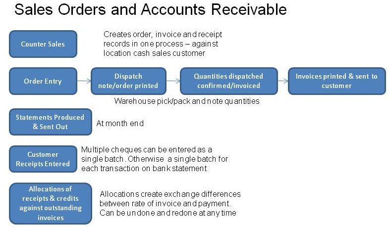
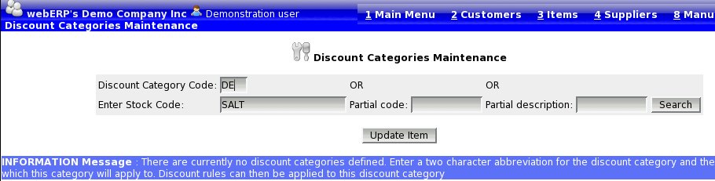
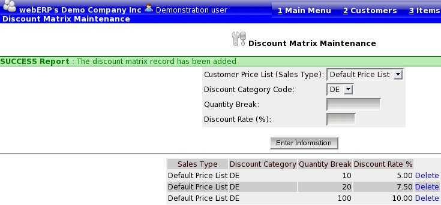

From the main menu, Orders tab, click the Order Entry link.
Initially, the order entry page shows the options to allow selection of a customer and branch. The customer is the actual charge account to where the order should be billed and the branch contains all the information about delivery. The customer search facilities are similar to the select customer script, but the code actually looks up on the branch code of the customer, only branches are displayed with accompanying customer charge to information. Searching for a customer can be either by entering a letter or letters in the branch code or by entering some keywords (or section of) in the customer name. Searching in this way minimises the result set returned (possibly over a dial up connection) to ensure the response is as speedy as possible to the users browser. All branches matching the criteria entered and not flagged as disabled for transactions, are returned each one with a button on the customer code. Hitting the button for the desired customer/branch selects it as the customer and branch to deliver the order to. There is opportunity later to modify the delivery details if need be. The order now shows the quick entry screen headed up with the name of the customer and branch, together with the sales type of the customer.
There are two ways to select the line items for the order.
Having selected the parts for the order, it is possible to edit the quantities, price and discount applicable to each line of the order. To get the order values to re-calculate the "Recalulate" button must be clicked (this is the compromise of using server side scripting - PHP - to the exclusion of any client side - java - processing). Discounts will be calculated using the Discount Matrix functionality described under that section within the order based on the quantities that are entered.
If a line entered, displays against a red background this means that the system inventory is showing insufficient stock to cover the order line, from the inventory location as defaulted from the customer branch record - as the most appropriate inventory location to draw the stock for this branch's orders. The item code displayed is also a link to a new browser window showing the stock status inquiry for the item, this shows the stock available at all locations.
A line can be deleted at any time by clicking on the link at the end of the line to delete it.
The whole order can be cancelled at any time by clicking on the "Cancel Whole Order" button.
The customer can also be changed at any time.
Once all the line items have been selected the Delivery Details button must be clicked. Note that there have been no changes to the database at all. The data entered exists only as a server side cookie - a file on the web-server. Delivery details must be confirmed before the order can be placed.
By default the delivery details are obtained from the physical address of the branch. However, any of the information in this screen can be over-ridden. This information prints on the dispatch/packing slip and on the invoice.
The inventory location where the stock for the order is to be drawn from is defaulted from the customer branch record. However, it is possible to select an alternative inventory location if the order is to be picked from elsewhere. Inventory locations are defined by system administrators in Main Menu > Setup > Inventory Setup > Inventory Locations Maintenance.
The customer's order reference should be entered here and the most appropriate freight company should be selected. The system keeps track of the last freight company used to deliver to the branch and uses this as the default, if it is over-ridden then this new value is stored against the branch.
It is possible to go back to the line item entry screen retaining all the data entered on the delivery details screen by clicking on the modify line items button. If the inventory location to draw from has been changed the colouring of the background of the line items will be updated to reflect the stock available at the new location to pick from.
If the automatic freight calculations are being used - see the parameters in config.php, the freight cost will be calculated based on the sum of the whole order cubic metres and weight. The best shipping company will also be returned. The user can choose to charge the freight calculated or just use the cheapest freight company. The freight charge calculated can be over-ridden if required.
Once all details are entered correctly the Place Order button should be clicked. It is important to note that abandoning the order before this button is clicked there have been no updates to the database and nothing is saved. Clicking into some other screen loses the order as entered. Whilst it is perfectly acceptable to have several browser screens open looking at different inquiries at the same time. It is not possible to have two windows entering two separate sales orders at the same time, entries in the one window will over-write the other.
In version 3.12 of webERP a new feature was introduced which allowed for cash sales to be entered directly without first entering an order and then confirming a dispatch to invoice. This feature is known as "counter sales". From the main menu->Sales tab select Enter Counter Sales. Entry is similar to entering an order, by default the quick entry screen allows entry of item codes and quantities but it is also possible to select items by the search functions in much the same way as an order. The tax is calculated and the total amount to pay is shown. This page also expects the payment to be made and entered. The payment entered is automatically allocated to the sale and the invoice and the payment (receipt) are recorded against a defualt counter sale customer and branch - like any other sale.
Behind the scenes this script produces all the database entries for an order and an invoice with sales analysis, stock movements etc etc all correctly created. The customer (and customer branch) used for the entries is derived from the user's default inventory location. The only limitation is that serialised and lot controlled stock items cannot be sold using the Counter Sales functionality at the moment.
webERP looks at the user's default location and then looks up against the location record to find the cash sales debtor account (and branch) to use for counter sales entered. Each location for which counter sales are required must first be set up with the cash sales customer and branch which is to be used for counter sales entered. Note that the default location of the customer branch is ignored - the user's default location (see Setup->General->User Maintenance - the script webERP/WWW_Users.php) is used as the location and stock movements are all created from this location against the customer specified in the location record (Setup - > Inventory Setup -> Location Maintenance - the script webERP/Locations.php). To specify the customer and branch to use for counter sales for an inventory location (or warehouse), the customer code and branch code must be entered.
To produce credit notes in a customer facing situation it was difficult to first create the credit note manually, then enter a negative receipt (payment) against the customer account, then allocate the credit note to the negative receipt (payment). This has all been simplified with this Counter Returns functionality (new script to 4.09.2). This script allows the return of goods or services with the usual stock functionality and the capability to enter a payment to the customer that automatically allocates directly to the credit note.
Only Outstanding sales orders can be modified. Only these orders have any balance of a quantity remaining to be delivered and/or invoiced. Order lines that have been invoiced completely will not be available for modification. New items cannot be added to the order. Pricing cannot be altered if any amount of the line has already been delivered/invoiced. Quantities of an order line cannot be reduced below the quantity of the line already invoiced.
Note that changing the delivery address of an outstanding order that has already had some of the order delivered and invoiced will affect re-prints of the initial invoice - it will show as being delivered to the order delivery address that has been modified. Hard copy of original invoices are required.
There are several ways:
The Outstanding sales orders are shown by inventory location, the inventory location desired can be selected on this screen, by default the location defined as the default for the user is shown. The orders matching the criteria are only shown when the user clicks on the search orders button.
The orders displayed each show links to modify the line items, invoice the order or print the dispatch note. If the order has already been printed this link will show that it has already been printed to avoid printing several dispatch notes and risk doubling up deliveries.
A quotation can be entered for any customer/branch in much the same way as entry of an order. The pricing can be changed and discounts entered for the quotation in the same way as an order. An order is flagged as a quotation from the Delivery Details screen. On entry of a quotation a link to produce a pdf quotation for sending to the customer is available. If the quotation option is selected then the stock is not reserved in the stock status inquiries. Quotations can shown on the outstanding sales orders screen by selecting the option to show quotations. When this option is set only quotations show, there is a link so that they can be modified and if necessary changed to a sales order, there is also a link to re-print the pdf quotation.
Having changed a quotation to a sales order, from then on the process is the same as for any other sales order, a packing slip can be printed and the order confirmed for invoicing.
Orders entered can be defined so as to recurr at a desired frequency entered as:
If the order entered contains only 'dummy' service items - ie those items that do not refer to physical stock that requires advice to warehouse people to effect the delivery - then the order can be flagged to invoice automatically.
The process of defining a recurring order is done from the normal order entry screens - entering the line items and then the delivery details. However, instead of clicking the "Place Order" button, the user should click the "Create Recurring Order" button. This then allows entry of:
It is possible to review the recurring order templates currently defined from the SelectRecurringSalesOrder.php script which allows the entry of the dispatch location and then lists all those recurring order templates that are defined to be dispatched from this location.
From this selection screen it is also possible to select the template for modification. Line items on the order cannot be modified here, only the frequency, start and stop dates. If line items need to be modified then the template can be deleted and a new template created.
The sales orders are created from the recurring sales order templates by the script RecurringSalesOrderProcess.php. This script loops through all the recurring order templates and creates the orders as necessary based on the current date and the last time an order was created for the template and the frequency it is to recurr. The date of the last recurrence is updated in the template as the date of the last recurrence + the number of days between recurrences. An email is also produced for the email contact stored in the location record from where the delivery is to be effected from. The email advises that an order was created, the order number and if it was auto-invoiced. Ideally this script should be run from a scheduler/cron daily. It can be run as many times as you like and only create the orders required - without duplicating incorrectly.
webERP has a system called a discount matrix which allows any group of products to be defined and discounts applicable to all items of the group to be set up just once for the whole group of items. Different discounts can be applied to the "discount group" for each sales type (price list). When an item is entered into a sales order the system retrieves the correct price based on the customer's sales type (price list) and then retrieves the appropriate discount based on the quantity of the item and the other items already entered on the order. The discounts retrieved can be over-ridden.
To define the grouping of products:
Select an item that you wish to have a discount structure applied to it - using the "Select Item" link. Under the "Item Maintenance" section click on "Maintain Discount Category".
If there are no currently available discount categories then enter a discount category code - otherwise select the discount category that you wish to allocate the item to.

You can now search for additional items and add as many items to the discount group as you wish from this screen.
Having created the discount group you can now administer the discount rates applicable to this group of items.
From the main menu go to -> Setup -> Receivables/Payables section -> Discount Matrix

This form allows you to select any of the discount groups defined above and any sales type (price list)and then enter any quantity break and discount applicable given the quantity break - if the discount is applicable for all sales then enter a quantity break of 1